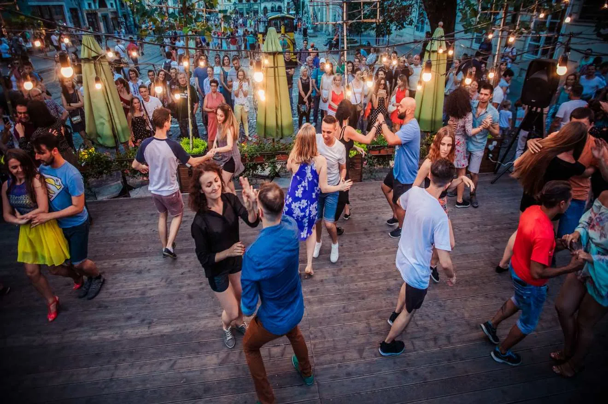

Medellín · Colombia
Colombia is het land van de salsa. In Medellín zijn dansstudio's die salsa-lessen aanbieden voor beginners, waarna je de avond afsluit in een salsa-bar in El Poblado. Een perfecte manier om lokale cultuur te beleven.

Boek een groepsles — solo lessen zijn duurder en minder leuk.
Ga daarna naar Vintrash of Dulce Jesús Mío voor live salsamuziek.
Colombianen dansen snel — schrik niet, iedereen begint ergens.